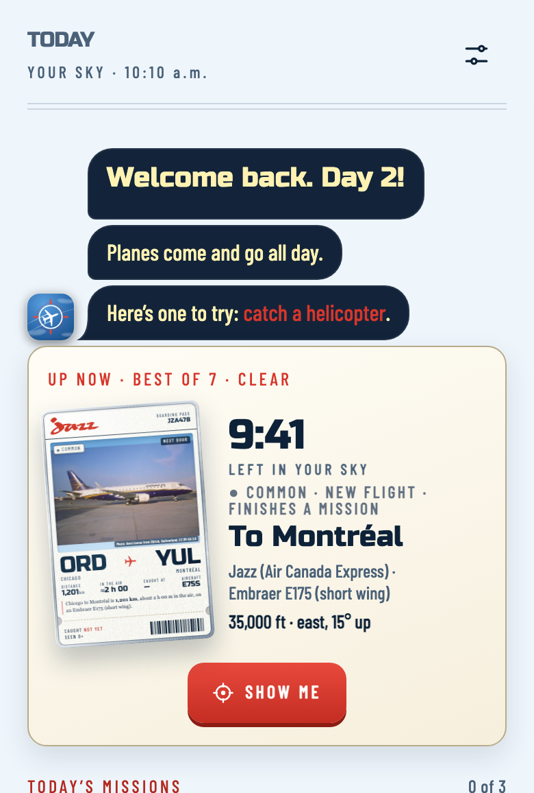
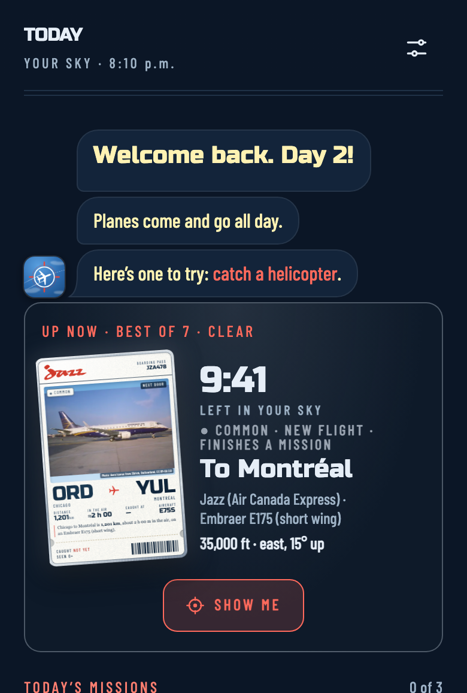
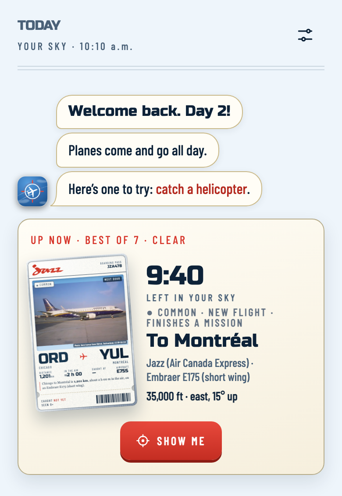
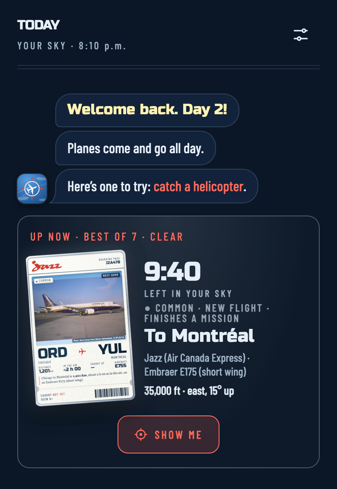
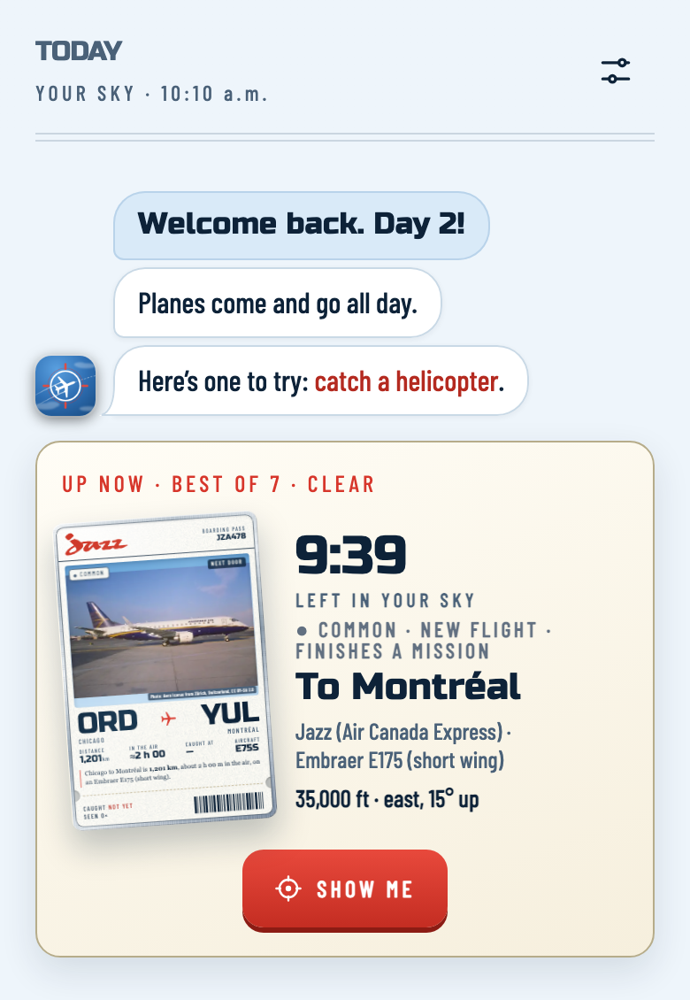
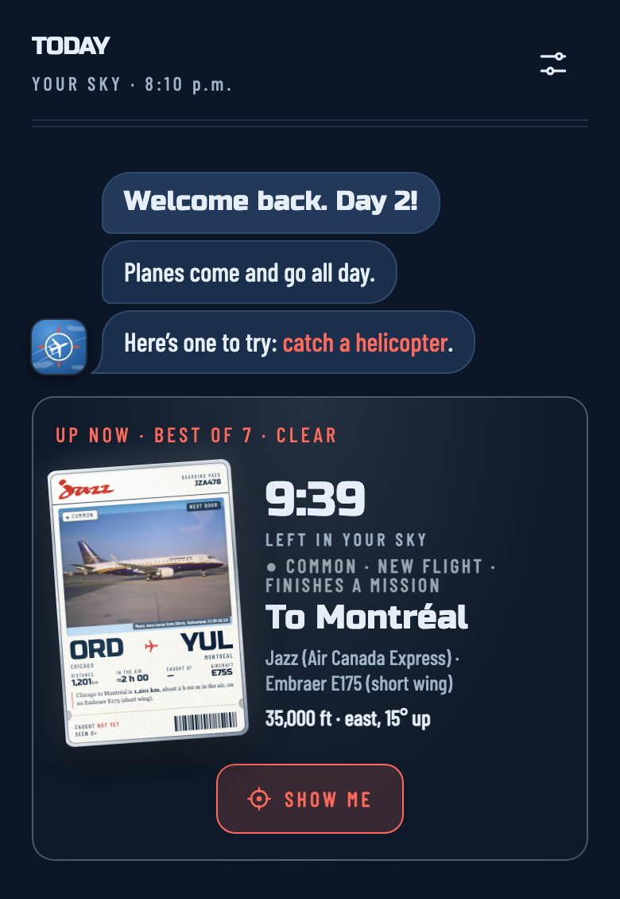
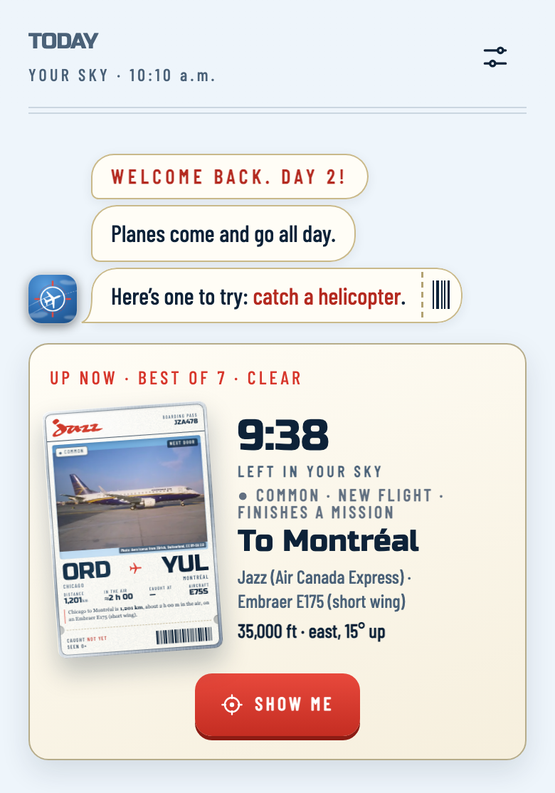
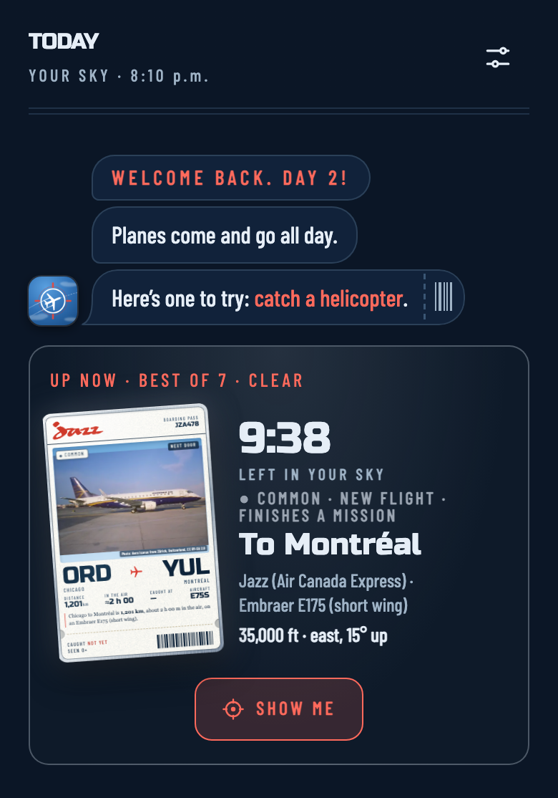

Today’s note bubbles in Sky
Real renders from the app (localhost, Testing tools on, seeded 12 days so the daily note shows), each option injected as a theme override. Same n2Build markup: Sky’s icon, the app talking. The bubble text is set in the page to show one, three and long wrapping notes. Every option includes the fixed tail.
::before is the fill and ::after the 1px outline along the tail’s curve and foot, both SVG masks, so a theme changes only their two colours. Each option below sets ::before to its bubble fill and ::after to its edge colour (and draws its edge as an inset 1px line so it runs on into the tail). Also found: the welcome bubble is 52px tall because app.css has a generic .big { min-height: 52px } that also matches .n2-b.big; B–D reset it.A As now
Space’s night bubbles carried over: navy with cream Barlow and a Russo headline. Reference only. Heavy on the pale sky, and the red link on navy fails contrast (3.3:1).


| text | ink | bubble | ratio | |
|---|---|---|---|---|
| day | body | #fff2b3 | #13243a | 13.87 |
| day | headline | #fff2b3 | #13243a | 13.87 |
| day | link (em) | #d7362b | #13243a | 3.32 fails |
| day | dim line | #c9c6ad | #13243a | 9.07 |
| night | body | #fff2b3 | #13243a | 13.87 |
| night | headline | #fff2b3 | #13243a | 13.87 |
| night | link (em) | #ff6a5c | #13243a | 5.57 |
| night | dim line | #c9c6ad | #13243a | 9.07 |
Every render: 360 / 390 / 430, day and night
One bubble


Three bubbles (Sevaan’s case)


Long lines wrapping


CSS override
/* no override: Space's bubbles (app.css) with the fixed tail */
B Paper
Sky’s card paper (#fffdf6) with navy ink and the fine gold rule from the cards; headline in SC Display at 17px; link in text red #b42a20. Warm and on-brand, but it is the same paper as the hero, so the note and the hero read as one block.


| text | ink | bubble | ratio | |
|---|---|---|---|---|
| day | body | #0d2238 | #fffdf6 | 15.83 |
| day | headline | #0d2238 | #fffdf6 | 15.83 |
| day | link (em) | #b42a20 | #fffdf6 | 6.27 |
| day | dim line | #4a6178 | #fffdf6 | 6.31 |
| night | body | #e6eef7 | #11223a | 13.65 |
| night | headline | #fff2b3 | #11223a | 14.16 |
| night | link (em) | #ff6a5c | #11223a | 5.68 |
| night | dim line | #9fb3c6 | #11223a | 7.41 |
Every render: 360 / 390 / 430, day and night
One bubble


Three bubbles (Sevaan’s case)


Long lines wrapping


CSS override
/* B day */
html:not(.sky-night) body.sky-only .n2-chat { --bb:#fffdf6; --bl:#c9b98a; }
html:not(.sky-night) body.sky-only .n2-b { background:var(--bb); color:#0d2238; box-shadow:inset 0 0 0 1px var(--bl), 0 2px 8px rgba(13,34,56,.08); }
html:not(.sky-night) body.sky-only .n2-b.big { font:400 17px/1.2 'SC Display', sans-serif; color:#0d2238; padding:9px 14px 10px; }
html:not(.sky-night) body.sky-only .n2-b em { color:#b42a20; }
html:not(.sky-night) body.sky-only .n2-b.dim { color:#4a6178; }
/* B night */
html.sky-night body.sky-only .n2-chat { --bb:#11223a; --bl:#2b4058; }
html.sky-night body.sky-only .n2-b { background:var(--bb); color:#e6eef7; box-shadow:inset 0 0 0 1px var(--bl); }
html.sky-night body.sky-only .n2-b.big { font:400 17px/1.2 'SC Display', sans-serif; color:#fff2b3; padding:9px 14px 10px; }
html.sky-night body.sky-only .n2-b em { color:#ff6a5c; }
html.sky-night body.sky-only .n2-b.dim { color:#9fb3c6; }
/* B, C, D: the tail in the option's colours (Space's tail, css/app.css: ::before = fill mask, ::after = 1px outline mask; the bubbles' edge is an inset 1px line so it runs on into the tail's outline) */
body.sky-only .n2-stack > .n2-b:last-child::before { background:var(--bb); }
body.sky-only .n2-stack > .n2-b:last-child::after { background:var(--bl); }
/* B, C, D: the welcome bubble loses the stray 52px min-height it picks up from app.css's generic .big rule, and the note gets room above the hero */
body.sky-only .n2-b.big { min-height:0; }
body.sky-only .n2-chat { margin-bottom:14px; }C White and sky blue my pick
White bubbles with Sky’s blue hairline (#c9d9e6), navy ink, the welcome line in soft sky blue. The lightest option: it reads as the app talking, not as a printed object, so the cream hero below stays the star.


| text | ink | bubble | ratio | |
|---|---|---|---|---|
| day | body | #0d2238 | #ffffff | 16.12 |
| day | headline | #0d2238 | #d9eaf8 | 13.10 |
| day | link (em) | #b42a20 | #ffffff | 6.38 |
| day | dim line | #4a6178 | #ffffff | 6.42 |
| night | body | #e6eef7 | #1a2f4b | 11.56 |
| night | headline | #e6eef7 | #22395a | 9.96 |
| night | link (em) | #ff6a5c | #1a2f4b | 4.81 |
| night | dim line | #9fb3c6 | #1a2f4b | 6.27 |
Every render: 360 / 390 / 430, day and night
One bubble


Three bubbles (Sevaan’s case)


Long lines wrapping


CSS override
/* C day */
html:not(.sky-night) body.sky-only .n2-chat { --bb:#ffffff; --bl:#c9d9e6; }
html:not(.sky-night) body.sky-only .n2-b { background:var(--bb); color:#0d2238; box-shadow:inset 0 0 0 1px var(--bl), 0 1px 3px rgba(13,34,56,.06); }
html:not(.sky-night) body.sky-only .n2-b.big { background:#d9eaf8; box-shadow:inset 0 0 0 1px #b9d3ea; font:400 17px/1.2 'SC Display', sans-serif; color:#0d2238; padding:9px 14px 10px; }
html:not(.sky-night) body.sky-only .n2-b em { color:#b42a20; }
html:not(.sky-night) body.sky-only .n2-b.dim { color:#4a6178; }
/* C night */
html.sky-night body.sky-only .n2-chat { --bb:#1a2f4b; --bl:#2f4a68; }
html.sky-night body.sky-only .n2-b { background:var(--bb); color:#e6eef7; box-shadow:inset 0 0 0 1px var(--bl); }
html.sky-night body.sky-only .n2-b.big { background:#22395a; font:400 17px/1.2 'SC Display', sans-serif; color:#e6eef7; padding:9px 14px 10px; }
html.sky-night body.sky-only .n2-b em { color:#ff6a5c; }
html.sky-night body.sky-only .n2-b.dim { color:#9fb3c6; }
/* B, C, D: the tail in the option's colours (Space's tail, css/app.css: ::before = fill mask, ::after = 1px outline mask; the bubbles' edge is an inset 1px line so it runs on into the tail's outline) */
body.sky-only .n2-stack > .n2-b:last-child::before { background:var(--bb); }
body.sky-only .n2-stack > .n2-b:last-child::after { background:var(--bl); }
/* B, C, D: the welcome bubble loses the stray 52px min-height it picks up from app.css's generic .big rule, and the note gets room above the hero */
body.sky-only .n2-b.big { min-height:0; }
body.sky-only .n2-chat { margin-bottom:14px; }D Ticket stub
Paper bubbles; the welcome becomes a red tracked-caps line like a boarding-pass label, and the last bubble gets a perforation and a small barcode stub. The most Sky-specific, but the stub eats ~40px of line width and is decoration in a chat.


| text | ink | bubble | ratio | |
|---|---|---|---|---|
| day | body | #0d2238 | #fffdf6 | 15.83 |
| day | headline | #b42a20 | #fffdf6 | 6.27 |
| day | link (em) | #b42a20 | #fffdf6 | 6.27 |
| day | dim line | #4a6178 | #fffdf6 | 6.31 |
| night | body | #e6eef7 | #11223a | 13.65 |
| night | headline | #ff6a5c | #11223a | 5.68 |
| night | link (em) | #ff6a5c | #11223a | 5.68 |
| night | dim line | #9fb3c6 | #11223a | 7.41 |
Every render: 360 / 390 / 430, day and night
One bubble


Three bubbles (Sevaan’s case)


Long lines wrapping


CSS override
/* D day */
html:not(.sky-night) body.sky-only .n2-chat { --bb:#fffdf6; --bl:#c9b98a; --perf:#b3a272; --bar:#0d2238; }
html:not(.sky-night) body.sky-only .n2-b { background:var(--bb); color:#0d2238; box-shadow:inset 0 0 0 1px var(--bl), 0 2px 8px rgba(13,34,56,.08); }
html:not(.sky-night) body.sky-only .n2-b.big { font:600 14px/1.2 'SC Label', sans-serif; letter-spacing:.2em; text-transform:uppercase; color:#b42a20; padding:8px 14px 7px; }
html:not(.sky-night) body.sky-only .n2-b em { color:#b42a20; }
html:not(.sky-night) body.sky-only .n2-b.dim { color:#4a6178; }
/* D night */
html.sky-night body.sky-only .n2-chat { --bb:#11223a; --bl:#2b4058; --perf:#3a5674; --bar:#9fb3c6; }
html.sky-night body.sky-only .n2-b { background:var(--bb); color:#e6eef7; box-shadow:inset 0 0 0 1px var(--bl); }
html.sky-night body.sky-only .n2-b.big { font:600 14px/1.2 'SC Label', sans-serif; letter-spacing:.2em; text-transform:uppercase; color:#ff6a5c; padding:8px 14px 7px; }
html.sky-night body.sky-only .n2-b em { color:#ff6a5c; }
html.sky-night body.sky-only .n2-b.dim { color:#9fb3c6; }
/* D both: the stub on the last bubble */
body.sky-only .n2-stack > .n2-b:last-child { padding-right:40px;
background-image:repeating-linear-gradient(180deg, var(--perf) 0 4px, transparent 4px 7px), repeating-linear-gradient(90deg, var(--bar) 0 1px, transparent 1px 2.5px, var(--bar) 2.5px 4.5px, transparent 4.5px 6px, var(--bar) 6px 6.8px, transparent 6.8px 8px);
background-size:1.5px calc(100% - 6px), 12px 20px; background-position:right 28px center, right 9px center; background-repeat:no-repeat; }
/* B, C, D: the tail in the option's colours (Space's tail, css/app.css: ::before = fill mask, ::after = 1px outline mask; the bubbles' edge is an inset 1px line so it runs on into the tail's outline) */
body.sky-only .n2-stack > .n2-b:last-child::before { background:var(--bb); }
body.sky-only .n2-stack > .n2-b:last-child::after { background:var(--bl); }
/* B, C, D: the welcome bubble loses the stray 52px min-height it picks up from app.css's generic .big rule, and the note gets room above the hero */
body.sky-only .n2-b.big { min-height:0; }
body.sky-only .n2-chat { margin-bottom:14px; }